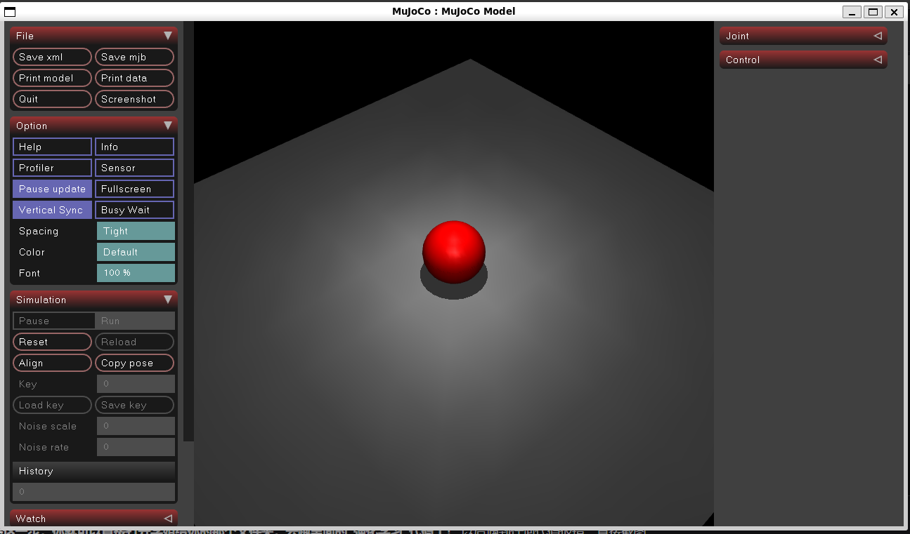

零基础搭建人形机器人开发环境指南
最近加入了学校的人形机器人课题组，第一步进行环境配置。 人形机器人开发通常依赖 Linux 环境，但为了兼顾日常学业，我选择了 Windows Subsystem for Linux (WSL2) 方案。本文记录了如何在 Windows 11 下，一步步搭建支持 GPU 加速和图形化仿真 (GUI) 的开发环境。
一、 基础架构：WSL2 与 Ubuntu 安装
1. 启用 WSL2 WSL2 允许我们在 Windows 中原生运行 Linux 内核，性能远超虚拟机。 在 PowerShell (管理员) 中输入：
重启电脑后，在微软应用商店 (Microsoft Store) 搜索并安装 Ubuntu 22.04.5 LTS。
2. 初始化系统 打开 Ubuntu 终端，设置用户名和密码。随后更换国内源（阿里云）以加速下载：
# 备份原源
sudo cp /etc/apt/sources.list /etc/apt/sources.list.bak
# 替换为阿里云源
sudo sed -i 's/archive.ubuntu.com/mirrors.aliyun.com/g' /etc/apt/sources.list
sudo sed -i 's/security.ubuntu.com/mirrors.aliyun.com/g' /etc/apt/sources.list
# 更新系统并安装基础工具
sudo apt update && sudo apt upgrade -y
sudo apt install build-essential git curl vim -y
二、 核心优化：配置镜像网络 (.wslconfig)
这是最关键的一步。为了解决 WSL2 连接 VPN 困难以及与 Windows 网络隔离的问题，我开启了 Mirrored (镜像网络) 模式。
在 Windows 下，新建文件 C:\Users\<你的用户名>\.wslconfig，写入以下内容：
然后重启 WSL 使配置生效：
注：此配置能让 Linux 直接共享 Windows 的网络代理，极大提升了后续拉取 GitHub 代码的速度。
三、 环境管理：Miniconda 与源优化
为了隔离不同项目的依赖，我使用 Miniconda 进行环境管理。
1. 安装 Miniconda
mkdir -p ~/miniconda3
wget https://repo.anaconda.com/miniconda/Miniconda3-latest-Linux-x86_64.sh -O ~/miniconda3/miniconda.sh
bash ~/miniconda3/miniconda.sh -b -u -p ~/miniconda3
rm -rf ~/miniconda3/miniconda.sh
~/miniconda3/bin/conda init bash
重启终端后，命令行前出现 (base) 即安装成功。
2. 解决 Anaconda ToS 报错 由于 Anaconda 官方源更新了服务条款，导致命令行安装报错。我选择切换到更开放的社区源 conda-forge。
执行以下命令直接重写 Conda 配置文件：
# 强制指定仅使用 conda-forge 源
echo "channels:
- conda-forge
channel_priority: strict
" > ~/.condarc
# 清理缓存
conda clean -i -y
四、 深度学习与仿真环境搭建
我为机器人项目创建了名为 humanoid 的独立环境。
1. 创建环境
2. 安装 PyTorch (GPU版) WSL2 支持显卡直通，无需在 Linux 内安装驱动。直接安装对应 CUDA 11.8 的 PyTorch：
五、 验证
为了验证环境是否支持 CUDA加速 和 图形化弹窗，编写了以下脚本test_mujoco.py
Python
import torch
import mujoco
import mujoco.viewer
import time
# 1. 验证 GPU 加速
print("-" * 30)
print(f"PyTorch Version: {torch.__version__}")
print(f"CUDA Available: {torch.cuda.is_available()}")
print("-" * 30)
# 2. 验证 MuJoCo 可视化 (创建一个红球掉落的场景)
xml = """
<mujoco>
<worldbody>
<light name="top" pos="0 0 1"/>
<geom name="floor" type="plane" size="1 1 0.1"/>
<body name="box" pos="0 0 1">
<joint type="free"/>
<geom type="sphere" size="0.1" rgba="1 0 0 1"/>
</body>
</worldbody>
</mujoco>
"""
model = mujoco.MjModel.from_xml_string(xml)
data = mujoco.MjData(model)
print("正在启动仿真窗口...")
with mujoco.viewer.launch_passive(model, data) as viewer:
start = time.time()
while viewer.is_running():
step_start = time.time()
mujoco.mj_step(model, data)
viewer.sync()
time_until_next_step = model.opt.timestep - (time.time() - step_start)
if time_until_next_step > 0:
time.sleep(time_until_next_step)
python test_mujoco.py 后：
1.终端输出 CUDA Available: True
2.桌面成功弹出一个仿真窗口，显示红球自由落体
